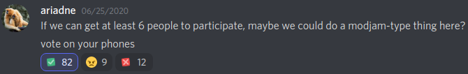

What is ServJam? 7 August 2021
ModJam/ModFest is an event where modder spend two weeks making mods from scratch, typically following a theme. ServJam is a ModJam for server-side only mods. It has taken some time for this great event to come to fruition. Over a year ago, a Discord server was created: Fabric Server-Side Development. Since that day, there have been talks and whispers of a potential servjam, but it simply never happened. Here is the original post from June 2020:
Since then, far more than 6 people have been interested, yet no servjam has occurred! This past summer, there were numerous mentions of it, and we finally decided to do it. If it is a success, which I have high hopes that it will be, we'll continue to host ServJams (hopefully) more frequently than once a year.